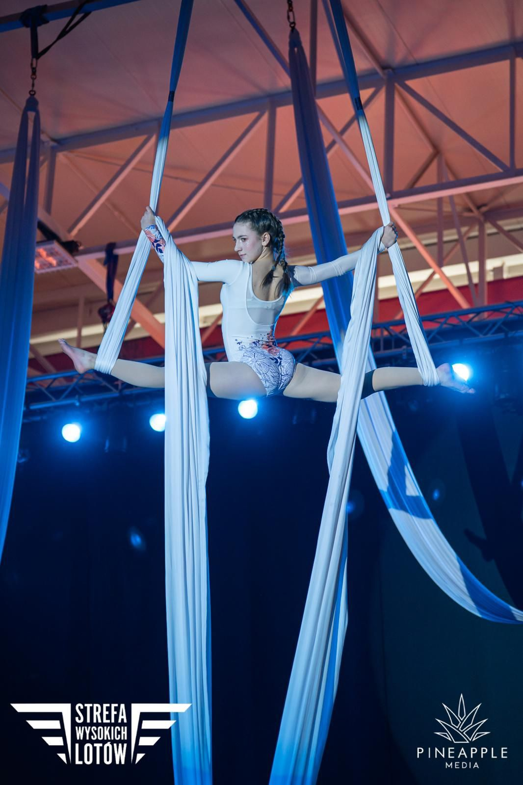

Aerial Silks — szarfy
Taniec na szarfach łączy w sobie akrobatykę, gimnastykę i taniec. Technika wiązań i owinięć szarfą pozwala wykonywać w powietrzu efektowne figury, szpagaty, przejścia, obroty, a z czasem również widowiskowe spadki.
To połączenie piękna tanecznego ruchu z akrobacjami wykonywanymi kilka metrów nad ziemią. Trening wzmacnia całe ciało, rozwija gibkość, koordynację, siłę i świadomość własnego ciała.
Zaczynamy zawsze od podstaw. Grupy rekreacyjne trenują dla przyjemności i formy, a osoby, które chcą iść dalej, przechodzą do grup wyczynowych i startów w zawodach.
